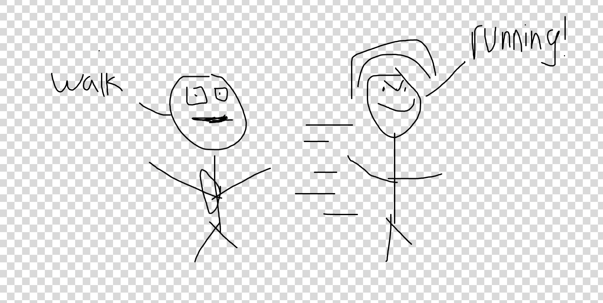
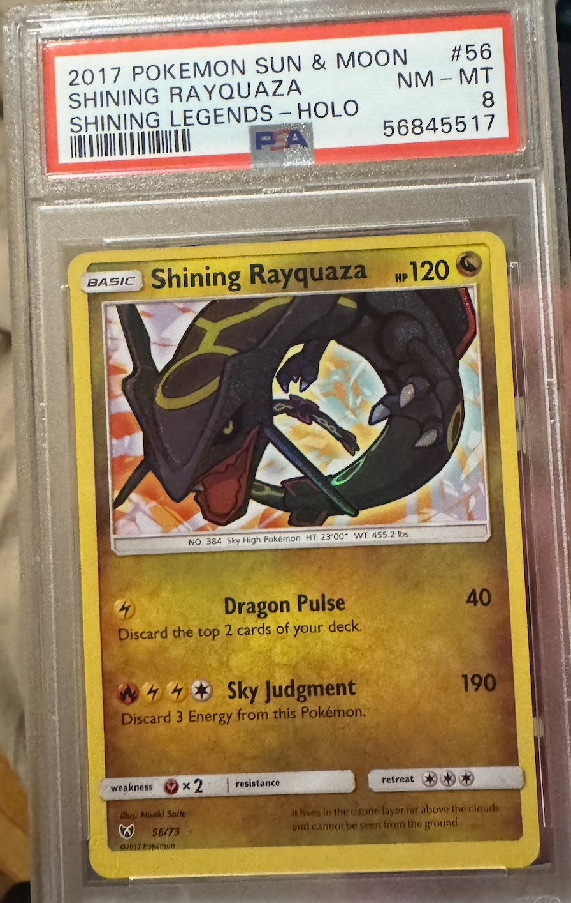
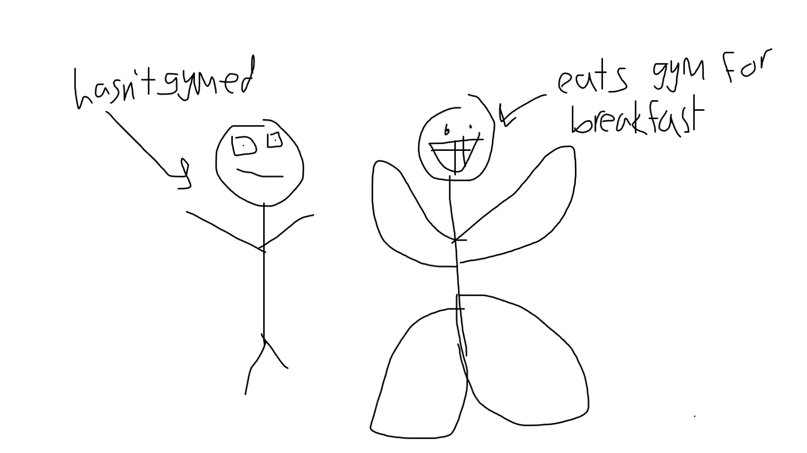
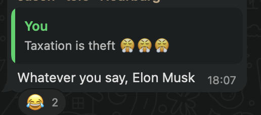

Episode 15
Monday
Today starts off with work as per usual. After work I go and catch up with some friends and check out the St. Patty’s day celebration over by FiDi. The celebration itself is pretty good. For all you punk rock fans out there they had a band do a cover of some Green Day stuff which slapped. According to my friend who is a big Green Day fan apparently they played some relatively obscure Green Day songs.
Tuesday
Once again zero points in originality for a day starting with work. Today after work I catch up with the Fire Gang and get dinner over by the Ferry Building. Through this dinner I learn many important things like the fact that Coachella is coming up in a couple weeks. Of course I have no plans to go but now I know. This group of friends is notable because its rare that I’ve clicked with people so well so quickly.
Wednesday
On my way to work I run into one of my friends running along Market street and she’s training for the Oakland half marathon. Apparently the best way to train is to run along Market street; This surprised me but I’m not much of a runner so what do I know. The interaction went a little something like this

After the usual coding its time for Midnight Runners. Throughout the day it was unclear whether it would actually rain during MR but thankfully it didn’t (... for the most part). It did wind up raining for part of it but it wasn’t really all that bad.
Thursday
Today is probably the most mundane day of the week. After work I go home and do chores. If any of you reading have watched that movie “Everything Everywhere all at Once” I tried to live out the dream of the guy who says “In another life I would have really liked just doing laundry and taxes with you”. Unfortunately I only get through my laundry and have to leave the taxes for later.
Friday
On my way to work I run into an old coworker and I strike up conversation with him.. I ask him if he has anything fun planned for the weekend and he tells me what hes up to. He doesn’t ask me in turn nor does he suggest something else to talk about so I take that to mean the conversation is over. I was a little bummed but it is what it is.
Today after work I go to a bar crawl over in the Mission. The guy who put this together invited over 100 people and a lot of them actually showed up! I was not prepared for how big this was gonna be. Throughout this bar crawl we go to 3 bars.
The first up is Zeitgeist. This bar has many pros and cons. The pros are that it is a large space with lots of room outside for talking with people and some big tables that are good for seating all of us. The cons are that a lot of people smoke at this bar. I mean seriously it was like a gosh darn bonfire with all that smoke in there. I HATE SMOKE. It makes it very difficult to breathe. I’d be lying if I didn’t fantasize about kicking them in the lungs. I mean after all if your lungs are gonna get messed up anyway at least then I don’t have to suffer. That little detour into my sociopathy aside its still a good space overall minus a couple times where I have to step away and inhale some fresh air.
The next bar up is Sycamore and boy was this one crowded. You really had to fight for dear life to move around. While at this bar one of my friends drunkenly gives me feedback on how to better organize the South Mission trash pickup. Its good feedback and I’m glad she gave it although its amusing how blunt she was. I appreciated that bluntness to be clear. What makes it funnier is that she started giving the feedback without knowing I was one of the organizers and once she learned she then apologized for being so blunt, but again I found it all funny so no harm. If you’re reading this thanks again for the feedback and look forward to a better trash pickup!!
The third bar on our list is Cassanova. Towards this point its getting close to Midnight and the ol Humza stamina is quickly depleting so I don’t stay here for too long. While I am here though I run into some college student here on a completely different bar crawl and we start talking for a while. The guy is super enthusiastic and really wants to talk with me. Unfortunately I was just on my way out the door at that point so I didn’t really want to talk too much to him but I did my best to keep the conversation going. I think back to my conversation with my coworker earlier in the day and I do slightly wish he could take a hint but he is really friendly so I can’t be too annoyed.
Saturday
Today starts with trash pickup. I was especially llooking forward to this trash pickup as we rolled out the new system to automatically assign routes. Overall it works quite well but as expected for a first rollout there are some issues. Some of the biggest things I want to improve are
Add the ability to assign multiple people at once (and have people assign there friends)
Don’t show the email that people use to log in and make it visible to everyone (I guess basic data protection is a good idea)
Also someone put this as their name and email when signing up and I wanted to share it with all of you
While at trash pickup I talk with one of my friends who explains all the reasons she is looking to move to New York. This isn’t notable in and of itself as many folks are looking to move from SF to NY but what is notable is that she made a whole power point on why she wants to. If you’re reading this please share this power point with me, I want to see it!!
We also get into some interesting conversations about mainstream events and culture. For example we talked about whether shows like The Office or Community could be made today or whether they would be cancelled. She argued that while most people would say they couldn’t be made today they actually could so long as they discuss the potentially controversial stuff with nuance.
We also talked about DEI and what it really means. I brought up the meta point that when people talk about it its easy to invoke the Motte and Bailey fallacy.
In this case the Motte would be that we should be unbiased when making decisions around hiring, recruiting etc. The Bailey here would be around the idea of quotas and giving different groups of people an edge. I’ve seen people talk about both of these when bringing up the issue which can make it hard for people to argue about the same thing.
I remember at my last job my CEO made an OKR some years ago that we should make a quarter of our hires to various minority groups which I both disagreed with and found unrealistic. I bring this up to say I know there are people that try to go for the Bailey in real life which I’m opposed to while of course I agree with the Motte.
After trash pickup I wind up walking into a store with my friend and that store has Pokemon cards. I’m not a big card fan but I see a card that looks really cool and decide to buy my first ever Pokemon card as an adult. Specifically its this shiny Rayquaza.

Afterwards I go to the gym for the first time in years. One of my friends has been trying to get me to go for a while and today is the day it finally happens. He is very good at showing me the ropes and encouraging me not to ego lift despite my couple of attempts at it. I was worried that going to the gym while fasting might be difficult but it was surprisingly easier than I thought it would be (though this may be because the DOMS will hit later). Below is a picture of me and my friend at the gym

After the gym we go back to my place for a bit and he takes a nap on my chair while I finally finish my Everything Everywhere all at Once Dream and do my taxes. While doing my taxes I complain in the group chat after realizing I owed more than I thought. I hop hoped for support but just get this

From there we go to Midnight Runners where we have a special Saturday party run. For this run we all dress up in Neon and run along North Beach. While walking to the starting point we all strutted and danced in neon. It was cool seeing people nearby high five us and be excited as we went by them. They told us it would only be 3 miles but after the 3rd it turns out they lied to us and we had to do an extra 0.8. You could say they gave us a run for our money.
After the run we went to a bar and partied for a while which was very fun! Unfortunately during the party I got hungry and cheated on my diet and ate a burrito for the first time in a while. Whats worse is that it was only an OK burrito, I was hoping my first time having something so sinful would at least taste better.
It turns out that one of my friends who I invited to this had already met the neighbor of Fire Gang’s resident dentist who also came to this. And they met while in LA on top of it. Truly a small world.
Around midnight I go home and pray. This night is one of the special nights in Islam where prayers are rewarded more than normal so I pray even after coming home around midnight. During these nights I like to pray for myself, my family, and my friends. Some of the things I pray for in non specific order
May Allah keep me and my family on the path of the righteous
May Allah keep us healthy and happy in this life and the hereafter
May Allah help my friend get an assistant professor job and make it a blessing for him
May Allah help my friends who are looking for jobs get great roles that they love and make it blessings for them
Sunday
Today we again have trash pickup and today is a fun one because I run into some rare and ultra rare Pokémon. It was great seeing people I hadn’t seen in quite a while even if one of the sightings was brief.
While collecting post trash pickup rewards I meetup with one of my friends who just got back from a grueling couple of months interviewing for assistant professor jobs. We hang out in Dolores Park for a while and then I go over to his place where a bunch of people from our friend group meetup to hang out and play games.
We start off with Dune Imperium however after a couple of rounds its apparent our group isn’t really feeling the game. I’ve been playing Dune Imperium a lot especially online and it kinda sapped my will to play. Thankfully I brought my Switch so we played Smash instead and I got to show off my Smash skills.
I don’t get back to my place until very late so I start writing the newsletter but decide to leave the rest for tomorrow!